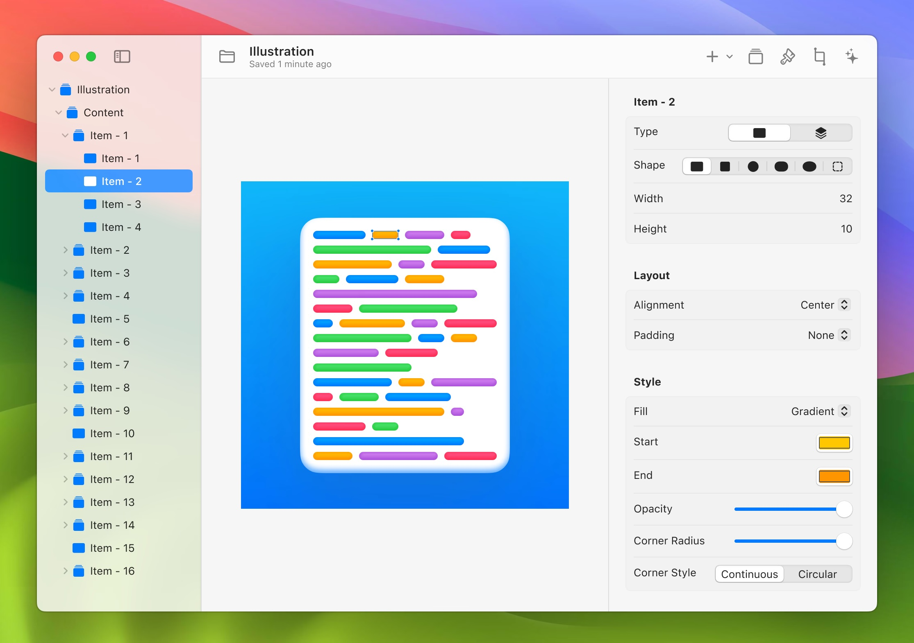

Cohort tableCurrent
Cohort definition
2,841 eligible records
Agentic clinical research environment (ACRE)
Lincei Lab is an open-source workbench for clinical research with EHR data. Direct research agents in plain language, inspect the path from cohort logic to final figures, and keep human review in the loop.
Open source Release targets: macOS, Windows, and Linux

01 / Auditability
A plausible answer is not enough. Lincei turns the path of a study into an inspectable record: definitions, runs, evidence, uncertainty, and human decisions.
The visible research surface for cards, artifacts, review gates, and provenance.
2,841 eligible records
14 assertions reviewed
Query, environment, and inputs captured
Claims linked to evidence
Decision and rationale recorded
02 / How it works
Describe the research question, dataset, population, endpoint, and constraints.
Agents use M4 and clinical-research skills to perform and capture the work.
Review queries, assumptions, artifacts, figures, dependencies, and provenance.
Approve, challenge, fork, or revise before the study moves forward.
03 / EHR-native foundation
M4 gives agents structured, read-oriented access to clinical databases while preserving the dataset, backend, query, and derived inputs around each result. Rigorous definitions still matter; Lincei makes them easier to see and review.
Explore M4 on GitHub04 / Clinical-research rigor
Clinician-reviewed, domain-specific checks help agents surface methodological risks early and move consequential choices into explicit human review gates.
Built for research workflows—not clinical care, diagnosis, or automated clinical decision-making. Outputs remain subject to expert review.
Protocol, cohort, estimand
Assumptions and choices
Scripts, runs, artifacts
Conservatively, with limits
05 / Open source
Inspect the tools, follow the design decisions, and build on an open foundation for more transparent clinical research.
Direct agents, inspect research cards, and keep study decisions in view.
Star on GitHubGive agents structured access to clinical datasets and derived tables.
Star on GitHubKeep research outputs, checkpoints, artifacts, and review decisions visible.
Star on GitHubProject status Lincei is early. Expect rough edges; inspect the source and follow development on GitHub.
06 / Why “Lincei”
Lincei takes its name from the Accademia Nazionale dei Lincei, founded in Rome in 1603 by Federico Cesi and collaborators. Its lynx emblem stood for sharp, penetrating observation: studying nature through evidence rather than submission to inherited authority.
Galileo joined; the Academy later published work connected to his studies of sunspots.
Revived under figures including Quintino Sella, it broadened across the sciences and humanities.
Today the Academy is based at Palazzo Corsini and associated with nearby Villa Farnesina.
Lincei Lab is not formally affiliated with the Academy.
Open by design
Build studies with agents while keeping the evidence, assumptions, and decisions available for human review.